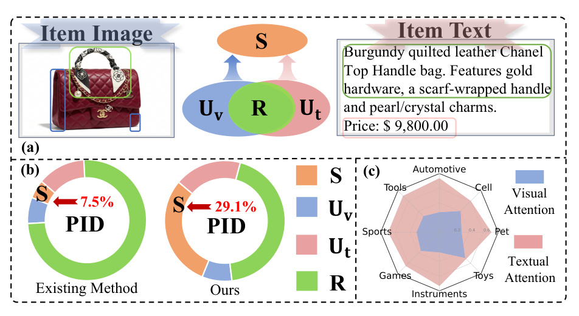
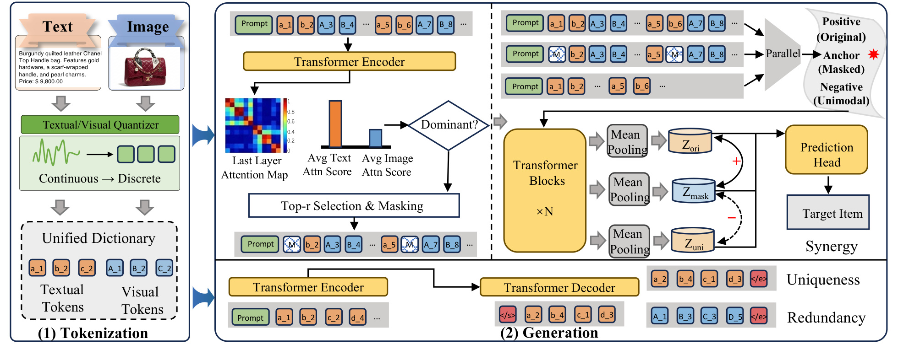
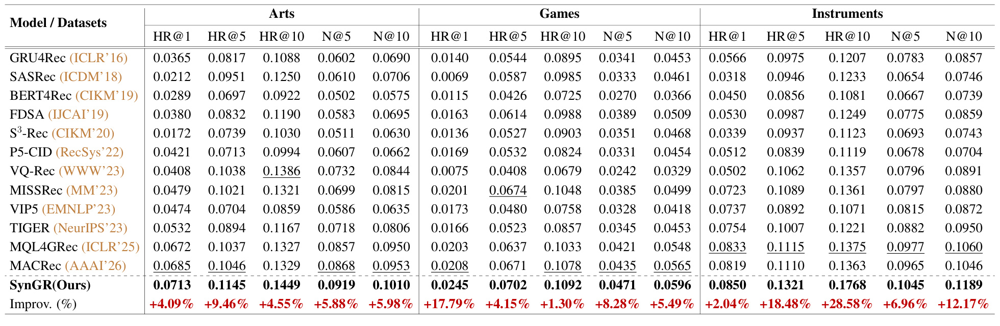
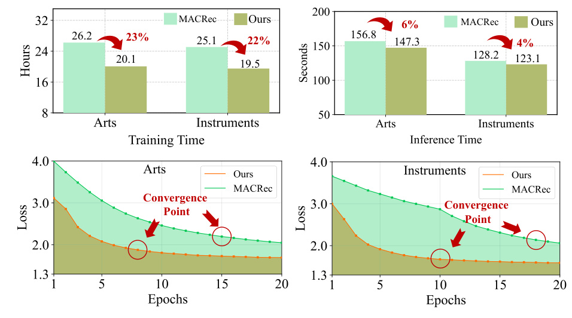
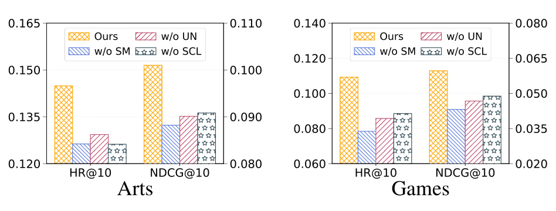
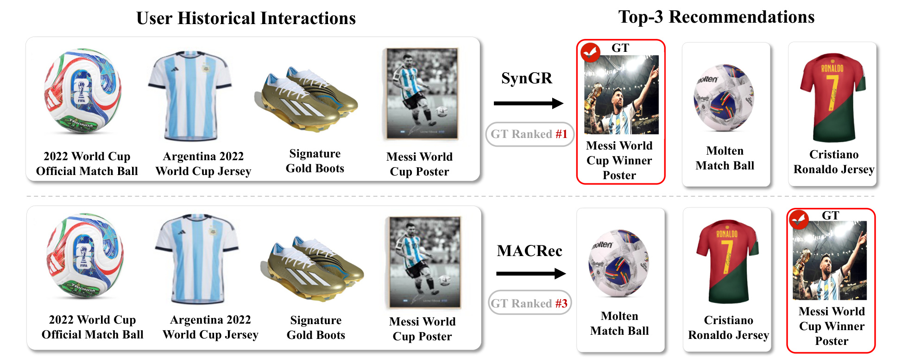

SynGR：释放跨模态协同在生成式推荐中的潜力
基本信息
| 字段 | 内容 |
|---|---|
| 英文标题 | SynGR: Unleashing the Potential of Cross-Modal Synergy for Generative Recommendation |
| 中文标题 | SynGR：释放跨模态协同在生成式推荐中的潜力 |
| 作者 | Wei Chen, Xingyu Guo, Shuang Li, Fuwei Zhang, Meng Yuan, Jing Fan, Zhao Zhang, Deqing Wang, Fuzhen Zhuang |
| 机构 | Beihang University；论文首页列出 School of Artificial Intelligence 和 School of Computer Science and Engineering |
| 来源 | arXiv；论文备注为 Accepted by ICML 2026 |
| 日期 | 2026-05-18 提交 |
| 论文入口 | arXiv:2605.18920 |
| 代码/项目 | GitHub: gxingyu/SynGR |
| 本地 PDF | 北航-SynGR.pdf |
| 历史重复 | 未发现已有完整 SynGR 笔记或主页页面 |
一句话结论
SynGR 解决的是多模态生成式推荐里一个很容易被“融合”二字掩盖的问题：视觉和文本都接进模型以后，模型未必真的学会跨模态交互，反而可能沿着更容易优化的文本捷径走。论文用 Partial Information Decomposition 把推荐目标中的信息拆成冗余、单模态独有和协同三部分，指出现有 alignment-centric 方法主要强化冗余与单模态信息，缺少对协同信息的显式压力。SynGR 的做法是先用注意力诊断出当前更占优势的模态，再 mask 掉该模态中最显著的 token，并用原始多模态视图、被 mask 的 anchor 视图和单模态 shortcut 负样本做对比学习，迫使生成模型在训练时利用视觉与文本共同出现才产生的 item 语义。
背景与问题
生成式推荐把传统的“给用户和物品打分”改写成“给定用户历史，生成下一个物品的离散标识符”。TIGER、VQ-Rec、MQL4GRec、MACRec 等路线通常先把 item 编成 Semantic ID 或多模态 code token，再让 Transformer/T5 之类的 seq2seq 模型自回归生成目标 item ID。这个范式的吸引力在于检索、排序和序列建模可以被统一成离散 token 生成问题，模型不只是学习一个向量空间里的相似度，而是学习“用户历史 token 到目标 item token”的条件分布。
但多模态生成式推荐存在一个实际障碍：视觉和文本并不是同质信息。文本描述通常是离散、紧凑、高语义密度的信号，品牌、品类、颜色、价格、用途等线索可以直接出现在 token 里；视觉 embedding 则更连续、更高维，也更容易包含噪声，需要聚合后才形成明确语义。若两种模态被映射到容量相近的 codebook，再一起送入生成模型，训练目标会自然偏向“哪种模态更容易降低 next-token loss 就用哪种”。在电商推荐里，这往往意味着模型过度依赖文本，因为文本更接近目标 item ID 的判别线索。
论文把这个现象称为 multimodal GR 的 synergy gap。所谓 gap，不是说视觉没有用，也不是说文本和视觉不能对齐，而是说现有方法更擅长学习两类信号：第一是冗余信息，例如图片和标题都表明这是足球、球衣或手袋；第二是单模态独有信息，例如文本里的品牌名或视觉里的纹理。但真正对推荐有价值的经常是第三类信息，也就是只有联合观察两种模态才出现的 emergent semantics。例如一个奢侈品手袋的图片可能显示皮革纹理和金属配件，文本说明品牌、价格和款式；两者合在一起才表达“高端奢侈定位”“可作为身份象征的礼物”等更高层属性。这些属性单看图片或文字都不稳定，却很可能决定用户偏好。

图 1 是论文动机的核心证据。左上把跨模态信息拆成冗余 R、视觉独有 Uv、文本独有 Ut 和协同 S；中间用 PID-inspired performance decomposition 对比现有方法和 SynGR，论文报告现有代表方法 MACRec 在 Arts 数据集上协同信息占比只有 7.5%，而 SynGR 提升到 29.1%；右侧雷达图显示当前模型在多个 Amazon 类目上对文本 attention 明显高于视觉 attention。这组图说明问题不是“缺少更多模态”，而是“模态进来了，但模型没有被迫使用跨模态依赖”。
这篇文章和 MACRec、MQL4GRec 的关系也值得区分。MACRec 关注多 aspect quantization 和 cross-modal alignment，希望构造更好的多模态 semantic ID；MQL4GRec 关注把多模态信息转成 quantitative language，供生成模型使用。SynGR 不主要改 item tokenizer，而是在生成阶段加入约束：如果模型总是靠 dominant modality 走捷径，就主动打断它，让它从另一个模态和跨模态组合中恢复目标。换句话说，SynGR 更像一个训练范式或正则化框架，可以和已有的多模态离散化路线组合。
核心方法
1. 用 PID 解释为什么 alignment 不够
论文先给出形式化设定。给定用户历史序列 H={x1,...,xL}，每个 item 有视觉 token xv,i 和文本 token xt,i。生成式推荐要建模的是 P(Y | Xv, Xt)，其中 Y 是下一个 item 的离散语义标识符。信息论视角下，模型希望最大化历史多模态输入对目标 Y 的任务相关信息，即 I(Xv, Xt; Y)。
基于 Partial Information Decomposition，联合互信息可以被拆成：
I(Xv, Xt; Y) = R + S + Uv + Ut其中 R 是两种模态都能提供的冗余信息，Uv/Ut 是视觉或文本单独提供的独有信息，S 是只有联合两种模态才出现的协同信息。论文指出，很多现有目标实际覆盖的是：
I(Xv; Y) = R + Uv
I(Xt; Y) = R + Ut
I(Xv; Xt) = R也就是说，同模态生成目标会强化单模态信息，跨模态 alignment 会强化冗余信息，但二者都没有直接最大化 S。更重要的是，alignment 如果做得过强，可能还会把两种模态压到共享语义空间里，进一步削弱那些“不一致但互补”的信息。推荐里的高阶偏好经常就在这种互补关系中，比如“阿根廷球衣 + 金色球鞋 + 梅西海报”共同指向的是梅西世界杯冠军纪念品，而不是单纯的足球或球衣。
2. 协同视图：保留联合预测能力，遮蔽单模态捷径
论文定义了 synergy-oriented transformation。目标是构造一个 bX = phi(Xv, Xt)，它满足两点：一是 Joint Sufficiency，即 bX 仍然保留对目标 Y 的联合预测能力；二是 Unimodal Obscuration，即 bX 不应大量泄漏任何单一模态可恢复的信息。直观地说，模型既不能丢掉推荐任务所需的信息，也不能轻松从某一个强模态里直接读答案。
这个理论目标落到训练实践，就是两个动作：先构造能打断单模态 shortcut 的 masked view，再用对比学习把该 view 拉近原始多模态 view、推远单模态 shortcut view。这样学到的表示 Zsyn 仍然能预测目标 item，但它的预测能力应更多来自跨模态交互，而不是某一模态的独有或冗余线索。
3. 多模态 tokenization：沿用 RQ-VAE 离散化
SynGR 仍然需要把连续的文本和视觉特征转成生成模型可处理的离散 token。论文采用 RQ-VAE：文本特征可由 LLaMA 等冻结文本编码器抽取，视觉特征可由 ViT 等冻结视觉编码器抽取，然后分别投影到 latent vector。每个 latent vector 经过 D 层 residual quantization，逐层选择最近的 codeword，并更新 residual。最终一个 item 会得到多层级的文本 code 和视觉 code。
为了让一个生成模型统一处理两类 token，论文构造了共享词表，但保留模态身份：文本 token 使用小写前缀，视觉 token 使用大写前缀。假设量化深度为 3，一个 item 可能被表示为 [a1, b2, c3, A1, B2, C3]。这类设计的作用是既把多模态内容转成统一序列，又不抹掉视觉和文本来自不同模态的事实。
4. Saliency-aware masking：只 mask dominant modality 的高显著 token
随机 mask 可能破坏有用信息，却未必击中模型真正依赖的 shortcut。SynGR 因此使用模型内部 attention 来诊断当前哪种模态更占优势。具体做法是抽取最后一层 encoder 的 self-attention map，对每个 token 计算其被所有 query 和所有 head 关注的总 attention mass，再按 token 数归一化得到 saliency score。然后分别对文本 token 集合和视觉 token 集合求平均显著性，显著性更高的模态被认定为 dominant modality。
找到 dominant modality 后，SynGR 只在该模态内部选择 top-r 最显著 token 替换成 [MASK]。这个设计有两个好处。第一，它有针对性地打断“最容易降低损失”的路径，而不是平均削弱所有输入。第二，它保留了另一模态以及 dominant modality 中非最高显著的部分，因此不至于把联合预测能力完全破坏掉。论文的理论设定里，这一步对应 Unimodal Obscuration；工程上，它相当于一个动态 hard augmentation。
5. Synergistic contrastive learning：原始视图为正，单模态视图为负
被 mask 的序列只是 anchor。SynGR 还构造两个参照：原始多模态序列 Hori 作为 positive view，单模态序列集合 Huni 作为 negative view。三种序列经过共享参数的 Transformer blocks 后，用 mask-aware mean pooling 得到序列级表示 Zmask、Zori 和 Zuni。随后使用 InfoNCE 形式的对比损失：拉近 Zmask 与 Zori，拉远 Zmask 与 Zuni。
这个负样本设计比普通 in-batch negative 更贴合问题。普通负样本通常只是另一个用户或另一个 item 序列，未必能惩罚模型依赖单模态；而 Huni 本身就是“只看文本”或“只看视觉”的 shortcut 表示。如果 anchor 在 latent space 里仍然贴近单模态表示，说明模型没有真正从跨模态组合里恢复信息。把单模态表示作为 hard negative，才能直接约束 synergy-oriented representation。
最终训练目标是生成损失加协同对比损失：
L = LGen + lambda * LSyn其中 LGen 是针对原始、masked、unimodal 三类视图的 next-token negative log-likelihood，LSyn 是协同对比正则。推理阶段不需要对比损失，也不需要额外计算协同正则；模型只按常规方式给定用户历史，通过 beam search 生成目标 item identifier。因此论文声称 SynGR 的推理复杂度与 vanilla Transformer backbone 保持一致，训练阶段只是增加常数级多视图开销。

图 2 把方法串起来看最清楚。左侧是 tokenization：文本和图像分别经过量化器变成带大小写前缀的统一字典 token。右侧是 generation：模型先用 attention map 判断 dominant modality，并做 top-r masking；然后并行处理 original、masked 和 unimodal 三种视图，得到 Zori、Zmask、Zuni；最后用生成头预测 target item，同时用对比学习把 masked anchor 拉向原始多模态语义、远离单模态 shortcut。这个图也说明 SynGR 并不是单独新增一个复杂检索模块，而是嵌在生成训练里的表示约束。
图表解读
Figure 1：问题不是多模态缺失，而是协同信息没有被释放
图 1 的三部分分别对应动机、证据和现象。信息分解图告诉我们，多模态推荐不能只看 shared representation，因为 shared 部分更接近冗余 R；PID 圆环图展示现有方法中 S 的比例很低；attention 雷达图则给出 shortcut 的直接迹象：文本模态经常拿到更高 attention。我的理解是，这里最关键的不是 7.5% 和 29.1% 的绝对值，而是论文把“多模态融合不充分”从经验描述转成了可诊断的训练偏置：当生成目标给模型提供了一条损失下降最快的文本路径，视觉和文本的高阶交互就会被优化过程自然压低。
Figure 2：SynGR 是一个“先打断，再对齐”的训练框架
图 2 中 saliency-aware masking 和 contrastive learning 需要一起看。只做 mask，模型可能学到鲁棒性，但不一定学到协同；只做对比，anchor 如果没有去掉 dominant shortcut，也可能继续贴近单模态。SynGR 的逻辑是先通过 top-r masking 制造一个缺口，再要求模型从剩余多模态上下文中补足这个缺口，并在表示空间里远离 unimodal shortcut。这个机制比“简单拼接视觉和文本 token”更主动，因为它改变了模型最容易走的优化路径。
Table 1：主结果显示 Instruments 上收益最大

表 1 比较了 GRU4Rec、SASRec、BERT4Rec、FDSA、S3-Rec、P5-CID、VQ-Rec、MISSRec、VIP5、TIGER、MQL4GRec、MACRec 和 SynGR。SynGR 在 Arts、Games、Instruments 三个数据集的 HR@1、HR@5、HR@10、NDCG@5、NDCG@10 上全部最优。相对最强 baseline，Arts 上 HR@10 提升 4.55%、NDCG@10 提升 5.98%；Games 上 HR@10 提升 1.30%、NDCG@10 提升 5.49%；Instruments 上 HR@10 提升 28.58%、NDCG@10 提升 12.17%。Instruments 的 HR@10 提升尤其大，暗示乐器类商品可能更依赖图片外观、文本属性和使用语境的联合判断，单一模态或简单对齐更容易漏掉精细偏好。
Figure 3：训练更快，推理略快，收敛更早

图 3 对比 SynGR 和 MACRec 在 Arts 与 Instruments 上的训练时间、推理时间和 loss 曲线。论文报告 SynGR 训练时间在 Arts 上从 26.2 小时降到 20.1 小时，在 Instruments 上从 25.1 小时降到 19.5 小时，分别约 23% 和 22% 的减少；推理时间从 156.8 秒降到 147.3 秒、从 128.2 秒降到 123.1 秒，分别约 6% 和 4% 的减少。收敛曲线也显示 SynGR 更早到达稳定点。这个结果有一定说服力，因为 SynGR 虽然增加了多视图训练和对比损失，但没有像 MACRec 那样引入更重的多 aspect alignment 任务；其核心计算复用已有 attention map，推理阶段不新增模块。
Figure 5：三个模块都不是装饰项

图 5 做了三种消融：w/o SM 用随机 mask 替换 saliency-based masking；w/o UN 用普通 batch 内随机负样本替换 unimodal shortcut negative；w/o SCL 移除 synergistic contrastive learning。Arts 和 Games 上完整 SynGR 都最好。这个图说明收益不是单纯来自“多做了一次数据增强”或“加了一个对比损失”，而是来自三者组合：mask 必须打在 dominant shortcut 上，负样本必须是单模态 shortcut，目标函数必须明确把 anchor 拉向原始多模态、推离单模态。
Figure 6：世界杯案例展示“协同意图”而非粗粒度相似

图 6 的用户历史包括 2022 世界杯比赛用球、阿根廷球衣、金色球鞋和梅西世界杯海报。真实下一个 item 是 Messi World Cup Winner Poster。MACRec 把 Molten match ball 和 Cristiano Ronaldo jersey 排在前面，说明它抓到了足球、球衣这类粗粒度视觉或文本相似；SynGR 把 GT 排在第一，更像是识别到“梅西 + 阿根廷 + 世界杯 + 海报/纪念品”的联合语义。这个案例很好地解释了论文所谓 synergy：推荐目标不是某个单独 token 的匹配，而是多个模态线索共同构成的用户意图。
实验与结果
论文的实验集中在三个 Amazon Product Reviews 类目：Arts、Games 和 Instruments。数据规模分别为 22,171/42,259/17,112 个用户，9,416/13,839/6,250 个 item，交互数为 174,079/373,514/136,226，稀疏度都接近 99.9%，平均序列长度约 7.85、8.84、7.96。评估采用 leave-one-out protocol，并对整个 item space 做 full ranking；生成式模型统一 beam size 为 20。这个设置比 sampled negative 更严格，因为模型要在全量候选里生成或排名正确 item。
主结果方面，SynGR 全指标领先。相对传统序列推荐模型，生成式方法整体更强，尤其是 TIGER、MQL4GRec、MACRec 这类 item tokenization 加 Transformer 生成的路线；但 SynGR 在强 baseline MACRec 之上仍有稳定提升，说明“释放协同信息”不是替代多模态 quantization，而是在已有多模态生成路线上的增益项。表 1 中 Instruments 上 HR@10 从最强 baseline 的 0.1375 提到 0.1768，这个幅度明显超过 Arts 和 Games，可能反映该类目中视觉外观、文本属性和功能用途的组合更决定用户下一步交互。
效率实验同样有意思。很多正则化方法提升效果但增加训练和推理成本，SynGR 的优点是推理阶段没有额外 overhead。训练阶段虽然要处理三种视图，但论文称这些视图可以在 batch 内并行，并且 saliency analysis 复用 forward pass 已经产生的 attention map。因此它在 MACRec 这种多 aspect alignment 框架面前反而更快。需要注意的是，论文的效率对比只报告了在 6 张 NVIDIA GeForce RTX 4090 上的设定，迁移到不同硬件、不同 batch size 或更大 catalog 时，绝对时间不一定一致，但“推理不新增模块”的结论较稳。
消融实验回答了三个关键疑问。第一，如果把 saliency mask 换成随机 mask，性能下降，说明不是任意扰动都能释放协同，必须定位 dominant modality 的高显著 token。第二，如果把 unimodal shortcut negative 换成普通随机负样本，性能下降，说明负样本需要针对 shortcut 设计。第三，如果移除对比学习，仅靠多视图生成损失，性能仍会下降，说明生成目标本身不足以惩罚单模态捷径。这三点共同支持论文核心假设：协同信息不会因为多模态 token 被拼接进序列就自然出现，需要训练目标显式施压。
参数敏感性方面，论文研究 mask ratio r、对比损失权重 lambda 和温度 tau。r 在 0.2 到 0.4 之间较好，过小打不断 shortcut，过大又会删除必要语义；lambda 在小范围内有效，过大会让对比正则干扰主生成任务；tau 在 0.05 到 0.07 附近表现较稳。这些结论对复现很有用：SynGR 的收益依赖适度干预，而不是越强越好。
实现细节方面，论文附录说明采用两阶段训练。预训练使用六个 Amazon 类目 Pet Supplies、Cell Phones、Automotive、Tools、Toys 和 Sports，总计约 7.1M 交互、884,918 用户、255,181 item；下游再 fine-tune 到目标类目。生成 backbone 使用 T5，encoder 和 decoder 都是 4 层 Transformer、6 个 self-attention heads、每层 hidden dimension 为 64；文本特征使用 LLaMA，视觉特征使用 ViT-L/14；RQ-VAE codebook size 为 256，量化层数为 4；batch size 固定 1024，温度 tau 为 0.07，训练 200 epochs。代码仓库已经公开，但是否包含可直接复现实验所需的全部数据处理产物和 checkpoint 需要进一步本地跑通后确认。
我的理解
这篇论文最有价值的地方，是把多模态推荐中的“融合”拆得更细。很多工作默认视觉和文本越对齐越好，但推荐任务并不总是需要两个模态说同一件事。冗余信息可以提高稳健性，单模态信息可以提供强判别线索，但真正体现用户偏好的常常是组合语义。例如用户买了某个品牌、某种风格、某类视觉造型、某个价格带商品，下一步偏好可能不是这些属性的任意一个，而是它们的交叉区域。SynGR 用 synergy 这个词，把“交叉区域里的偏好”变成了可优化对象。
从训练动力学看，SynGR 像是在对生成模型做 curriculum 式的反捷径训练。普通 next-token prediction 会奖励最短路径：哪个 token 最能预测目标，就最依赖哪个 token。Saliency-aware masking 则把这条最短路径局部封掉，让模型必须绕路。绕路本身未必一定更好，但如果正样本仍是完整多模态语义，负样本又是单模态 shortcut，那么模型会被引导到“既能接近完整语义，又不能退回单模态”的区域。这个区域正是论文希望近似的协同表示。
我也认为 SynGR 对生成式推荐有一个隐含启发：Semantic ID 设计和生成目标设计需要一起考虑。很多工作把精力放在 item tokenization 上，希望构造更好的 ID；但如果后续生成模型的目标函数允许它只靠文本或某个强特征预测 ID，再好的多模态 ID 也可能被简化使用。SynGR 不一定证明它找到了唯一正确的协同信息，但它提醒我们：在生成式推荐中，optimization shortcut 会决定 tokenization 的实际利用方式。
另一个值得注意的点是 PID 在论文里更像解释框架和诊断工具，而不是严格可求的因果分解。附录中的 normalized PID computation 用 text-only、vision-only 和 joint bi-modal 的性能差来近似 S、R、Ut、Uv。这种计算是合理的工程 proxy，但它依赖评估函数和模型输出，不能完全等同于真实信息论 PID。因此读这篇论文时，不应把 29.1% 理解为严格的信息占比，而应理解为“联合模型相对单模态模型多出来的任务性能贡献”。
工程启发与复现建议
如果要在实际推荐系统或研究代码里复现 SynGR，我会按四层检查。
第一层是数据和 item 内容。SynGR 依赖每个 item 至少有稳定的文本描述和图片。如果图片缺失、文本质量差或两者不一致，saliency mask 可能会变成噪声放大器。论文的数据处理要求每个 item 对应一个 image 和一个 text description，这一点在工业数据里并不自动成立。需要先做 item 内容清洗、图片去重、文本规范化和缺失模态处理。
第二层是 tokenizer。论文使用 LLaMA 文本特征、ViT-L/14 视觉特征和 RQ-VAE 多层量化。复现时需要确认 codebook 是否真的学到有区分度的层级 token。如果 RQ-VAE collapse，后面的 SynGR 只能在坏 token 上学习。建议先单独评估 tokenization：看 item code 的重复率、类目聚合度、同一用户历史中 code 的多样性，以及 text/vision code 是否过度偏向热门类目。
第三层是 saliency mask。实现中要注意 attention map 的来源、维度和归一化方式。论文用最后一层 encoder attention，对每个 token 汇总所有 query 和 head 的 attention mass；再对文本和视觉 token 分别求平均显著性。如果模型 backbone 或 prompt 格式变化，token 位置、special token、padding token 都要正确排除，否则 dominant modality 诊断会偏。
第四层是对比损失。Zmask、Zori、Zuni 的 pooling 需要 mask-aware，不能让 [PAD] 进入平均。单模态 negative 的构造也要和任务保持一致：文本子任务用文本 unimodal shortcut，视觉子任务用视觉 unimodal shortcut。lambda 不宜过大，论文搜索范围是 0.001 到 0.009，说明它是辅助正则而不是主目标。上线或大规模训练时，建议先从较小 lambda 和 0.2 到 0.4 的 mask ratio 开始。
从工程收益看，SynGR 的可取之处是推理成本不增加。训练期的 masked view 和 contrastive view 可以被视为模型鲁棒性和协同偏好的蒸馏过程；部署时仍然只需要常规生成。对召回链路而言，这比增加在线 cross-modal reasoning 模块更容易接受。真正的风险在训练成本和数据处理复杂度，而不是在线延迟。
局限与风险
- 论文主要在 Amazon 三个公开类目上验证，虽然覆盖 Arts、Games、Instruments，但还不能说明在新闻、短视频、本地生活、广告等高动态场景中同样有效。
- SynGR 目前主要挖掘 item-side 的视觉文本协同，用户侧协同和 collaborative signal 没有被充分纳入。论文结论里也承认，未来可以结合 interaction-driven collaborative signals 增强个性化。
- PID 分解是近似诊断，不是严格的信息论估计。用性能差近似 S、R、U 的做法可以辅助说明趋势，但不能作为强理论保证。
- Saliency-aware masking 依赖 attention 作为显著性 proxy。Attention 并不总等于因果重要性，如果 attention map 与真实 shortcut 不一致，mask 可能打错位置。
- 文本模态在电商数据里通常更强，SynGR 针对 dominant modality 的策略很适合这种场景。但如果某些场景里视觉更强、文本更噪，或者两种模态质量随 item 波动很大，需要重新调 mask ratio 和视图构造。
- 实验中的 backbone 和 hidden size 相对研究设定较小，工业大规模 catalog、长用户序列和更大生成模型下的训练稳定性还需要验证。
- 论文公开了代码仓库，但数据版权、预处理脚本完整性、预训练 checkpoint 和复现实验配置是否足够开箱即用，需要进一步检查。
- 只优化跨模态协同可能带来过拟合风险。某些商品的视觉和文本组合可能是偶然相关，模型如果过度追求高阶交互，可能在分布变化时不如简单冗余信号稳健。
后续跟进
- 本地拉取代码仓库，检查 data_process、index、pretrain、finetune_mask 等脚本是否和论文附录参数一致，尤其是 RQ-VAE codebook size、量化层数、mask ratio 和 contrastive weight。
- 用一个小型 Amazon 类目先跑通 tokenization 到 fine-tuning 的最小链路，记录 item code 重复率、训练显存、每 epoch 时间和 full ranking 评估耗时。
- 和 MACRec/MQL4GRec 做同 tokenizer 条件下的消融，确认收益来自 SynGR 训练约束，而不是 tokenizer 或实现差异。
- 尝试把 saliency-aware masking 替换为 gradient-based、leave-one-out 或 causal intervention 重要性估计，看 attention proxy 是否足够可靠。
- 在更复杂模态组合上测试，例如图文视频商品、短视频封面加标题加评论，观察 SynGR 的 unimodal negative 是否需要扩展成多负样本集合。
- 将协同目标和 collaborative signal 结合：例如让 unimodal negative 不只是单 item 内容视图，也包括用户历史中的单模态序列，从而更直接约束个性化偏好。
- 分析 bad case：当 SynGR 排错时，它是过度相信视觉文本组合，还是 mask 破坏了关键 token，或者 semantic ID 本身没有区分目标 item。
- 对线上系统而言，优先评估 SynGR 是否提升长尾 item、冷启动 item、图文不完全一致 item 的召回质量，因为这些场景最可能受益于跨模态协同。